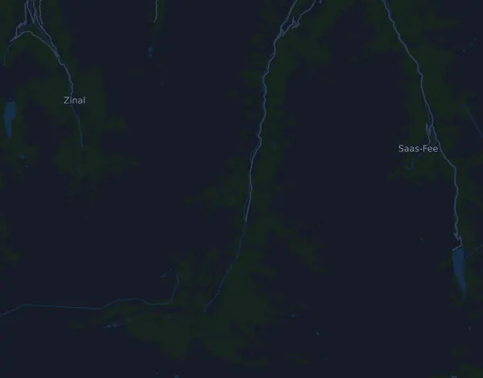

Gornergrat Zermatt Marathon – Marathon 42.6 km
- Distance
- 42.6 km
- Elevation gain
- ↑ 1,897 m
- Highest point
- 2,584 m a.s.l.
- Surface
- Trail
- Profile
- Very hilly
Elevation profile
Prepare with Mila
Mila is a running coach app. Add a race to your plan and the coach plans your weeks up to race day around your form, and gives you a finish-time forecast and a plan for pacing, drinks and fuel on the course.

The right run, on the right day.
The course

About the course
Gornergrat Zermatt Marathon – Marathon is a trail race in St. Niklaus, Switzerland, over 42.6 km. The course climbs 1,897 m and descends 424 m in total, 45 m per km, which makes it very hilly. The highest point is 2,584 m above sea level and the lowest 1,101 m.
The biggest climb starts at km 23.8: 653 m of ascent over 8.5 km at 7.7 % on average, up to 2,264 m. In total the course has 10 climbs of at least 25 m; the last one starts at km 38.9.
In the Mila app, the coach describes the course in detail in your language and plans your pacing and fueling for it.
Climbs
| Starts at | Length | Gain | Gradient | Top (m above sea level) |
|---|---|---|---|---|
| km 0.0 | 9.6 km | 318 m | 3.3 % | 1,419 |
| km 10.2 | 6.9 km | 95 m | 1.4 % | 1,507 |
| km 17.0 | 2 km | 86 m | 4.2 % | 1,592 |
| km 19.1 | 570 m | 27 m | 4.7 % | 1,618 |
| km 19.9 | 450 m | 25 m | 5.5 % | 1,632 |
| km 20.8 | 960 m | 27 m | 2.8 % | 1,629 |
| km 21.9 | 740 m | 26 m | 3.5 % | 1,647 |
| km 23.8 | 8.5 km | 653 m | 7.7 % | 2,264 |
| km 32.9 | 1.1 km | 148 m | 13.7 % | 2,363 |
| km 38.9 | 3.5 km | 368 m | 10.6 % | 2,584 |
Pace table
Gornergrat Zermatt Marathon – Marathon 42.6 km in 3:00:00 – pace per km and splits
4:14 per km · km 10: 42:16 · km 21.1: 1:29:11 · km 30: 2:06:47 · km 40: 2:49:03 · finish: 3:00:00
Gornergrat Zermatt Marathon – Marathon 42.6 km in 3:30:00 – pace per km and splits
4:56 per km · km 10: 49:18 · km 21.1: 1:44:02 · km 30: 2:27:55 · km 40: 3:17:14 · finish: 3:30:00
Gornergrat Zermatt Marathon – Marathon 42.6 km in 4:00:00 – pace per km and splits
5:38 per km · km 10: 56:21 · km 21.1: 1:58:54 · km 30: 2:49:03 · km 40: 3:45:24 · finish: 4:00:00
Gornergrat Zermatt Marathon – Marathon 42.6 km in 4:30:00 – pace per km and splits
6:20 per km · km 10: 1:03:24 · km 21.1: 2:13:46 · km 30: 3:10:11 · km 40: 4:13:35 · finish: 4:30:00
The times assume an even pace the whole way. This is plain arithmetic, not a forecast: on climbs, in crowds and at aid stations the pace varies.
Frequently asked questions
When is Gornergrat Zermatt Marathon – Marathon 42.6 km?
The date of the next edition is not set yet. The race was last held on 4 July 2026.
How long is Gornergrat Zermatt Marathon – Marathon 42.6 km and how much climbing is there?
The race is 42.6 km with 1,897 m of climbing and 424 m of descent. The highest point is 2,584 m above sea level.
What is the course of Gornergrat Zermatt Marathon – Marathon 42.6 km like?
The course is very hilly, with 45 m of climbing per km on average. It has 10 climbs of at least 25 m; the biggest starts at km 23.8: 653 m over 8.5 km. It runs from the start to a finish in another place. The surface is trail.
How should I pace Gornergrat Zermatt Marathon – Marathon 42.6 km?
Aim for an even effort rather than an even pace: let the pace drop on the climbs, win it back where it levels out, and hold back in the first kilometres. The biggest climbs start at km 0.0, km 23.8, km 32.9 and km 38.9. In Mila you get a pace plan for this course, based on your own form.
More races like this
More races nearby
- Davos X-Trails (tidigare Swissalpine Davos) – Diamond Run 68 km24 July 2027 · Davos, Switzerland
- Eiger Ultra Trail by UTMB – E101 Ultra Trail17 July 2027 · Grindelwald, Switzerland
- Engadin Sommerlauf 23 km22 August 2027 · Sils, Switzerland
- Genève Marathon – Marathon 42.2 km9 May 2027 · Cologny, Switzerland
- Jungfrau-Marathon 42 km11 September 2027 · Interlaken, Switzerland
- Kerzerslauf – 15 km (Der Klassiker)20 March 2027 · Kerzers, Switzerland
Prepare with Mila
The right run, on the right day.
Details come from the course file and the organizer's information. Check the date, start times and rules with the organizer.
Mila is not affiliated with, sponsored by or endorsed by the organizer or the race's sponsors. Names and trademarks belong to their owners. Organizer or rights holder? Ask for a change or a removal